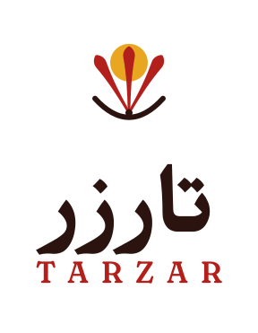
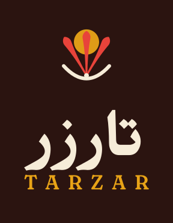
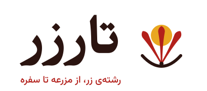
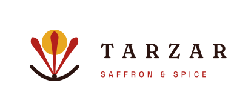
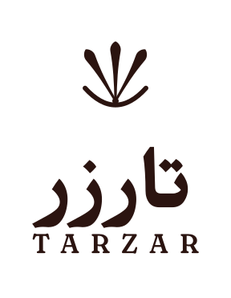
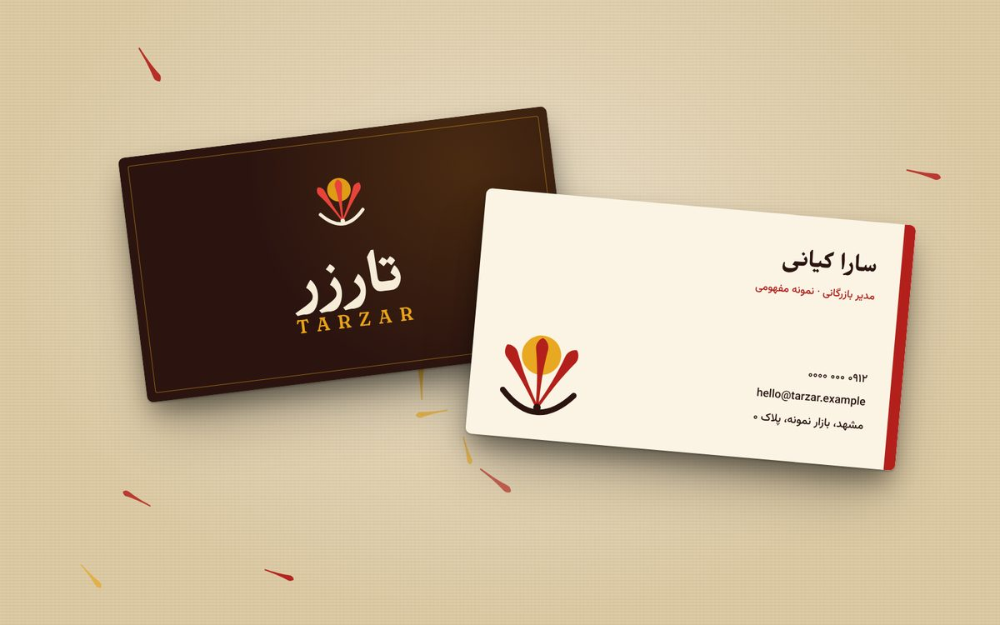
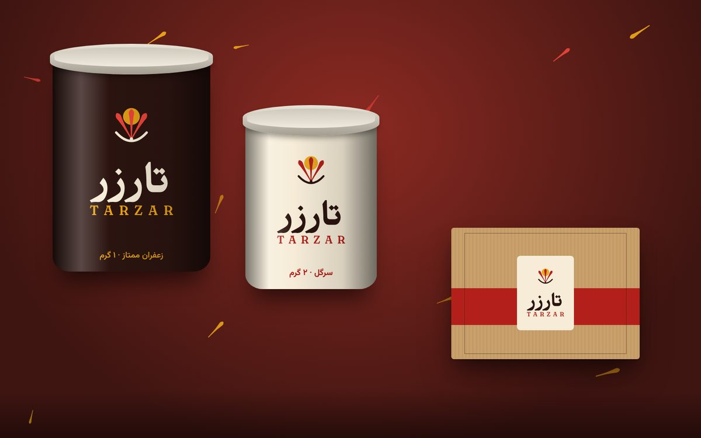
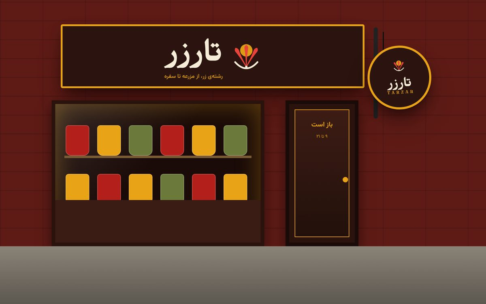
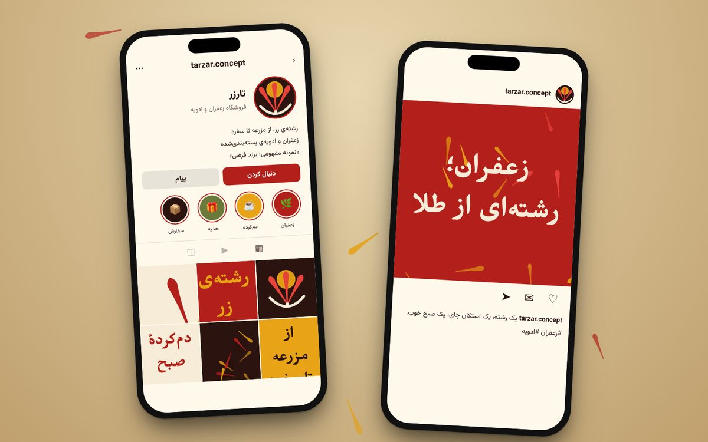

تارزر
برای فروشگاهی کوچک که میخواهد از قوطیهای شلوغ بازار فاصله بگیرد و حس هدیه و اصالت بدهد، هویتی ساختهام که از خود زعفران شروع میشود: سه رشتهی سرخ و یک خورشید زر.

بریف و ایده
مسئله
فروشگاههای زعفران معمولاً شبیه هماند: قوطی قرمز، عکس مزرعه، قیمت. برند باید در یک نگاه متفاوت و مطمئن دیده شود.
ایده
سه رشتهی زعفران از دل کاسهای بالا میآیند. کاسه شبیه بدنهی حرف «ت» است و خورشید طلایی پشت رشتهها رنگ «زر» را به نام میدهد.
نتیجه
نمادی ساده که روی قوطی، مهر و تابلو خوانا میماند و یک سیستم رنگی گرم و کمرنگنشدنی دارد.
لوگو و نسخهها












فضای خالی
دور لوگو دستکم به اندازهی ارتفاع نماد فضای خالی بگذار.
کوچکترین اندازه
نماد تا ۲۴ پیکسل و لوگوی کامل تا ۸۰ پیکسل عرض خوانا میماند.
چه نکنیم
لوگو را نکش، رنگهایش را عوض نکن و روی زمینهی شلوغ نگذار.
نماد: سه رشتهی زعفران، کاسهی «ت» و خورشید. نماد از ابتدا با دو رنگ و در حالت تکرنگ طراحی شده تا روی مهر و کیسهی کاغذی هم کار کند.
پالت رنگ
روی هر رنگ بزن تا کد هگز کپی شود.
تایپوگرافی
همهی فونتها آزاد و رایگاناند (مجوز OFL). نوشتهی لوگو برای حفظ شکل، به منحنی تبدیل شده است.
کاربرد روی مصنوعات




روند کار روی پروژهی واقعی
بریف
مخاطب، رقبا و حس مورد نظر را میپرسم.
کانسپت
چند مسیر ساده با توضیح نشان میدهم؛ تو یکی را انتخاب میکنی.
اجرا
لوگو، رنگ و فونت نهایی و کاربرد روی نمونهها.
تحویل
فایل برداری SVG، PNG و راهنمای کوتاه استفاده.
برای برند خودت هم همین دقت را میخواهی؟
بگو چه کاری میکنی و چه حسی میخواهی. زمان و هزینه بعد از بررسی نیاز اعلام میشود.